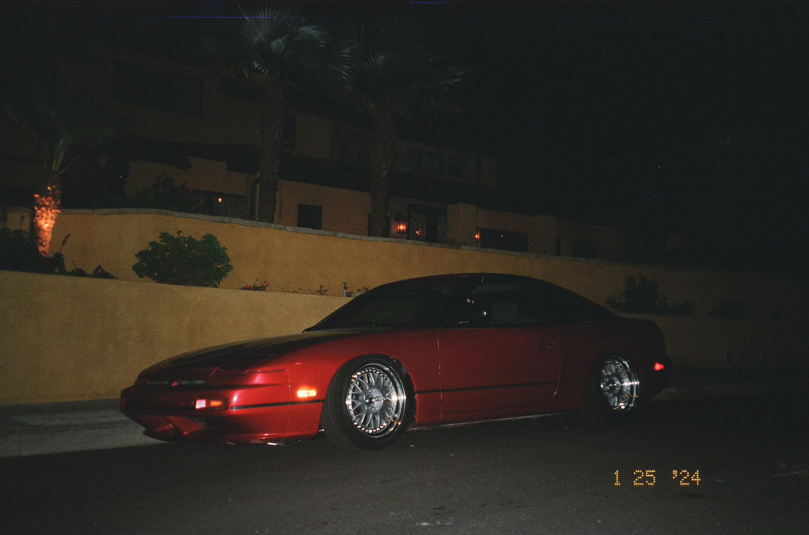

A UX designer🖥️, car enthusiast🚗, piano player🎹, and currently attending Cal Poly SLO.
Works
Cal Poly Racing FSAE Car Livery
Planning, designing, and executing the livery for Cal Poly Racing's 2025 Formula SAE racecar.
Grassroots Magazine Cover Art
Cover designs for my in-progress magazine, covering young car enthusiasts' stories and new-age American car culture.
About
For me, all things design can be traced back to my love of cars.

Before moving to SLO, I was heavily involved with my local car scene.
I would take my personal project car, a 1989 Nissan 240sx, to local meet-ups and enjoy talking with other enthusiasts about their vehicles.
Inspired by the individuality and creativity of my peers, I channeled my own personal style and love for car-modifying into a UX design philosophy — simple beauty and usability.
Contact
I need a job!
If you're looking for a new designer, feel free to contact me: